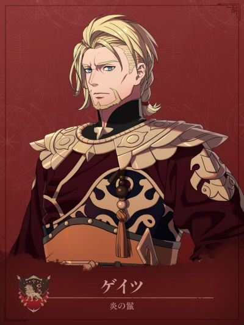

COMPANION DOSSIER
盖茨
ゲイツ · 炎之鬃（贝特朗队）
检索别名：盖茨
喜欢什么，送什么
茶、马匹用品、决斗/书法相关
喜欢的东西：赛伊的茶、费尔加纳马、决斗、书法
兴趣：泡茶、练武
查看送礼原文与例外 →第一部 · 各路线加入条件
- 凯伊线
- —
- 迪托利希线
- 3S / 10R ・贝特朗外传 ・贝特朗队败退后
- 赛奥朵拉线
- —
- 蕾达线
- —
S = 支援等级 · R = 名声等级 · — = 无法招募
查看招募原文与附加说明 →交涉要准备什么
本批尚未独立核对该角色交涉流程。先看上方原表的物品、金钱、外传与 S／R 门槛；没有写出明细不代表无条件加入。
怎么养，怎么转职
编辑培养建议
枪系物理前排／邻接护卫，骑乘与重装按需投入
- 前期
- 第一部仅迪托利希线可招，须完成贝特朗外传并等贝特朗队败退，再满足支援3、名声10实际入队。先沿已有枪术、马术与兵种接续，不必退回初级重练；队里已有成型伊欧时，盖茨先补邻接护卫，避免重复投入骑兵资源。
- 中期
- 低投入主练枪术，以枪B＋马术C备考荣光骑士。想走重装骑兵，先确认此前赛奥朵拉线战备解锁已带入当前存档，再补马术、重装及枪／斧训练；未解锁继续用荣光骑士，不把重装路线当迪线必经步骤。
- 后期目标
- 第三部省训练可沿枪A转圣枪师，以步兵枪系作战；白魔术是苦手，不必强行改养主治疗。需要骑乘物理防守再投グレートナイト：枪或斧A、马D、重装D，并完成クレール神殿委托。后攻耐物+5有出手顺序条件，魔法承伤仍要另查；未开放前继续使用成型上级职。
- 考试与解锁
- 荣光骑士、重装骑兵需上级票证；圣枪师、グレートナイト需最上级票证，另留武器、回复和补考预算。上述Rank按备考目标写，资格、开放与通过率以当前存档为准。枪系可同时衔接两条终职，不建议为了分支一次重练枪、斧、马、重装和白魔。
- 取舍与限制
- 「助太刀」只给邻接友军守备+3，不给自己加防，也不加魔防。Lv35「牙閃+」攻击时20%使攻击力+7、命中+100，可靠击杀按不触发计算。圣枪师精通的防御力+5须满HP；グレートナイト精通「猛盾」仅先攻战斗时50%减半，不能当作后攻承伤保障。
这些是阶段性培养方向，并非必须逐级转职的固定链。适用难度及版本未做独立实测；优先满足当前队伍缺口。
本次新增条目经过来源页面核对，未逐项游戏内实测。没有补充明细的“交涉”仍待核验，不表示没有额外要求。